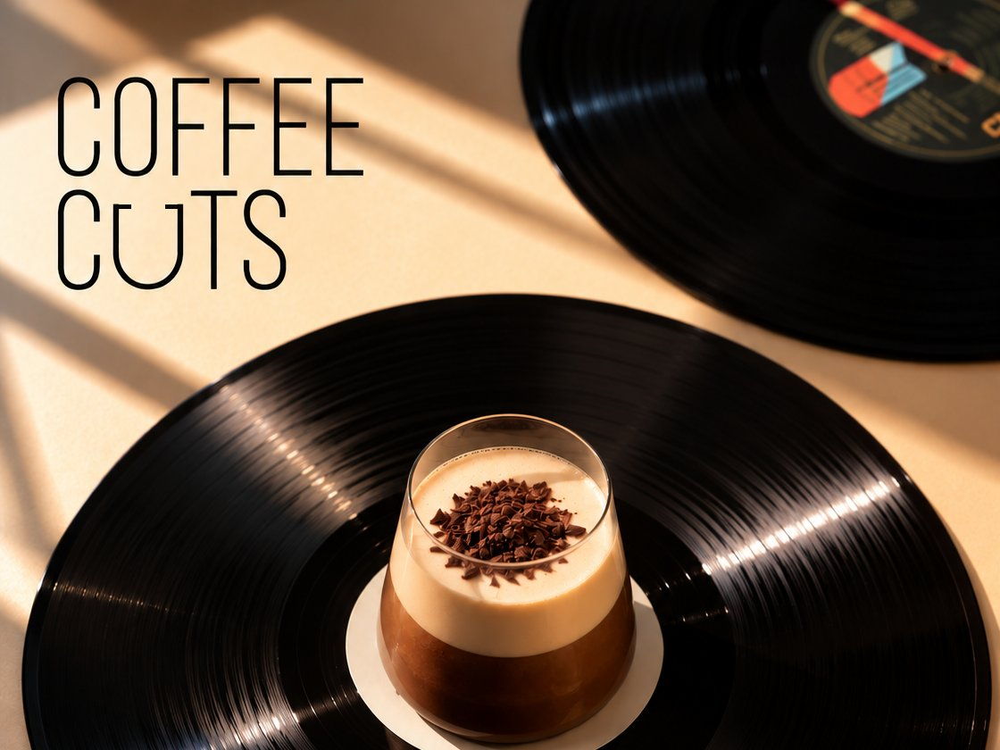

COFFEE CUTS

Of je nu een koffiebar hebt of bijvoorbeeld een cocktailbar: je wilt warme muziek die past bij de identiteit van je zaak. Geen generieke (AI-)tracks. Met Coffee cuts stellen we een playlist samen voor jouw zaak, uit onze eigen collectie van nieuwe releases en classics. Of wil je liever een live dj?